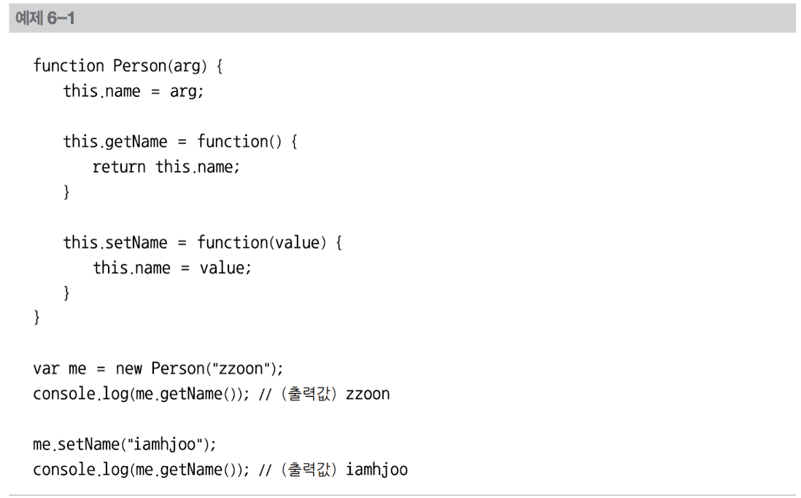
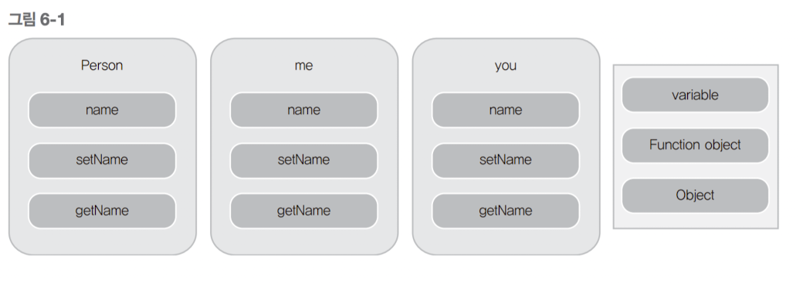
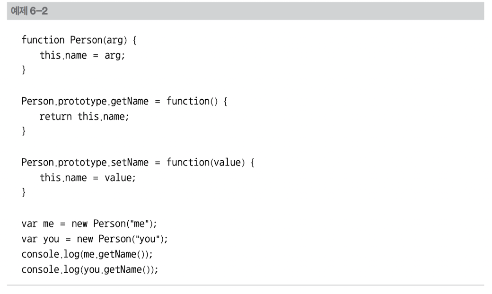
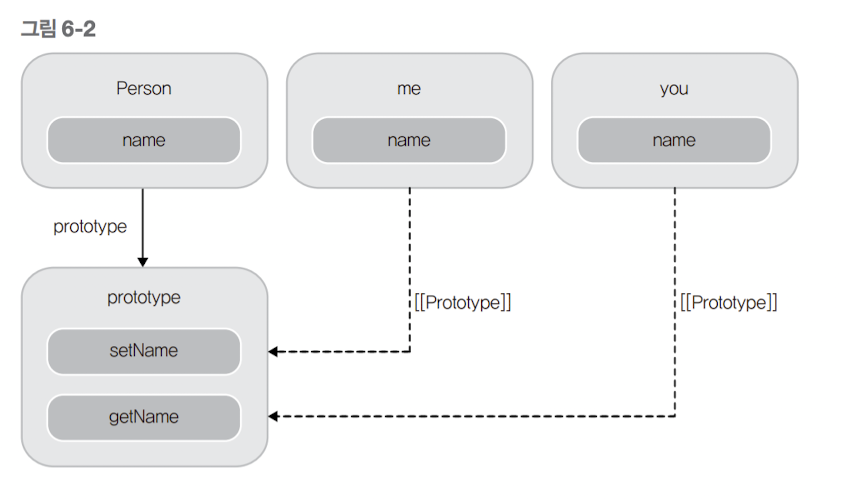

클래스, 생성자, 메서드
C++ 이나 Java와 같은 경우 class라는 키워드를 제공하여 프로그래머는 클래스를 만들 수 있다. 클래스와 같은 이름의 메서드로 생성자를 구현해낸다. 하지만 자바스크립트에는 이러한 개념이 없다. 계속해서 강조했듯이 자바스크립트는 거의 모든 것이 객체이고, 특히 함수 객체로 많은 것을 구현해낸다. 클래스, 생성자, 메서드도 모두 함수로 구현이 가능하다. 구체적으로 살펴보기에 앞서, 4장에서 이미 공부한 자바스크립트의 프로토타입과 new 연산자를 다시 한번 복습하고 이 장을 읽으면 이해가 더 쉬울 것이다. 다음 예제를 보자.

예제 6-1에서 new 키워드로 새로운 객체 me를 만들었음을 주목하자. var me = new Person("zzoon"); 이 형태는 기존 객체지향 프로그래밍 언어에서 한 클래스의 인스턴스를 생성하는 코드와 매우 유사하다. 함수 Person이 클래스이자 생성자의 역할을 한다. 자바스크립트에서 클래스 기반의 객체지향 프로그래밍은 기본적인 형태가 이와 같다. 클래스 및 생성자의 역할을 하는 함수가 있고, 사용자는 new 키워드로 인스턴스를 생성하여 사용할 수 있다. 예제에서 me는 Person의 인스턴스로서 name변수가 있고, getName()과 setName() 함수가 있다. 하지만 이 예제는 문제가 많다. 정확히는 이 예제의 Person 함수의 구현이 바람직하지 못하다. 이 Person을 생성자로 하여 여러 개의 객체를 생성한다고 가정해보자. =============================== var me = new Person("me"); var you = new Person("you"); var him = new Person("him"); =============================== 이와 같이 객체를 생성하면 겉으로는 별 문제 없이 작동하는 것을 볼 수 있다. 하지만 각 객체는 자기 영역에서 공통적으로 사용할 수 있는 setName() 함수와 getName() 함수를 따로 생성하고 있다. 이는 불필요하게 중복되는 영역을 메모리에 올려놓고 사용함을 의미하고 자원 낭비를 가져온다. 이를 그림으로 표현하면 다음과 같다.

따라서 앞의 문제를 해결하려면 다른 방식의 접근이 필요한데, 여기서 활용할 수 있는 자바스크립트의 특성이 함수 객체의 프로토타입이다. 다음 코드를 보자.

예제 6-2에서는 Person 함수 객체의 prototype프로퍼티에 getName()과 setName() 함수를 정의하였다. 이 Person으로 객체를 생성한다면 각 객체는 각자 따로 함수 객체를 생성할 필요 없이 setName()과 getName() 함수를 프로토타입 체인으로 접근할 수 있다. 이를 그림으로 표현하면 다음과 같다.

이와 같이 자바스크립트에서 클래스 안의 메서드를 정의할 때는 프로토타입 객체에 정의한 후, new로 생성한 객체에서 접근할 수 있게 하는 것이 좋다. 더글라스 크락포드는 다음과 같은 함수를 제시하면서 메서드를 정의하는 방법을 소개한다. ======================================================== Function.prototype.method = function(name, func){ if (!this.prototype[name]){ this.prototype[name] = func; } } ======================================================== 이 함수를 이용한다면 에제6-2은 다음과 같은 형태가 된다.